A home to 2 billion monthly logged in users, YouTube attracts millions of viewers each day who generate billions of watch time hours every single day. Hence, Youtube has created a lucrative opportunity for marketers as well as advertisers! Almost every big brand is leveraging its potential and any brand not utilizing the power of YouTube Ads in this age, is already losing at their social media marketing game!
Apart from just being the viewers, subscribers are the real wealth earned on YouTube channel as they are the trusted delighted customers of the value created through the video content. Many creators use YouTube Advertising platform to attract new followers to their channel. Another way to do is by buying YouTube subscribers through authentic sources that are provide genuine YouTube users.
In this blog, I will discuss the A-Z of YouTube Ads, how to create Youtube Ads like a pro, why they are important and how they can help brands achieve sales. Further, how I will also see things from the YouTubers’ point i.e. how creators effectively can reach people searching products & services or video content similar to theirs. Thus, YouTube Ads offers an impactful way to reach new audience and potential clients!
Let’s begin!
Contents
- 1. Massive and diverse reach
- 2. YouTube influences purchase decisions
- 3. YouTube Advertisement is the future!
- 4. TrueView in-stream ads
- 5. Non-skippable in-stream ads
- 6. TrueView video discovery ads
- 7. Bumper ads
- 8. YouTube Masthead ads
- 9. Overlay Ads
- 10. Sponsored Cards
- 11. How to run a successful Ad Campaign on YouTube?
Why Brands / YouTubers should run YouTube Advertisements?
I gathered 3 reasons why marketers should leverage YouTube Advertisement:
1. Massive and diverse reach
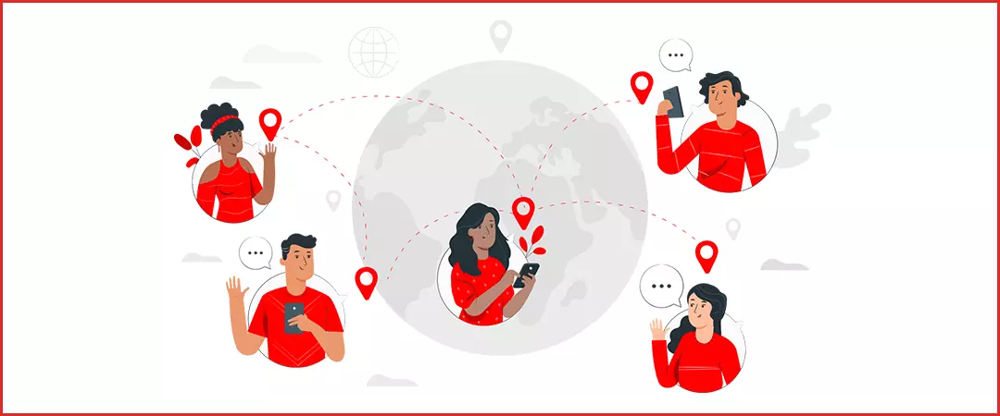
People come to YouTube for both entertainment as well as information purposes, making it both a social media platform and a search engine. Thus, marketers can promote different kinds of products & services on this platform.
2. YouTube influences purchase decisions
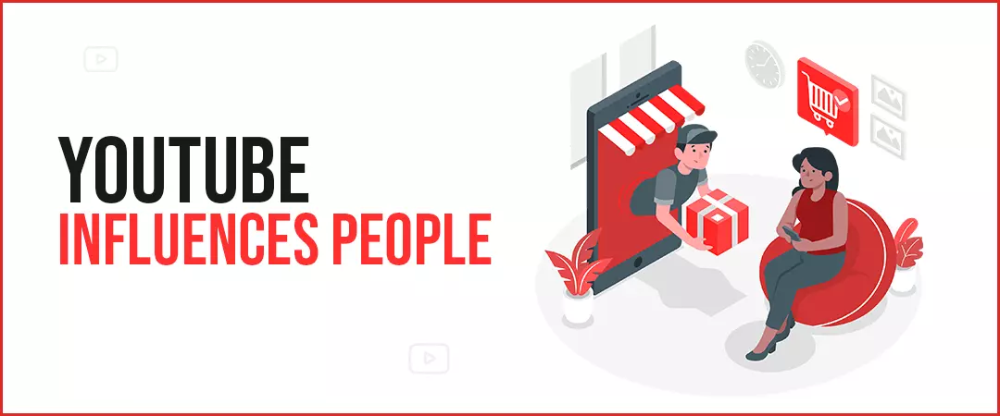
According to Think with Google blog, 90% people say that they learned about a new product or service through YouTube. Moreover, on an average, a YouTube user visits 9 pages in a day
3. YouTube Advertisement is the future!
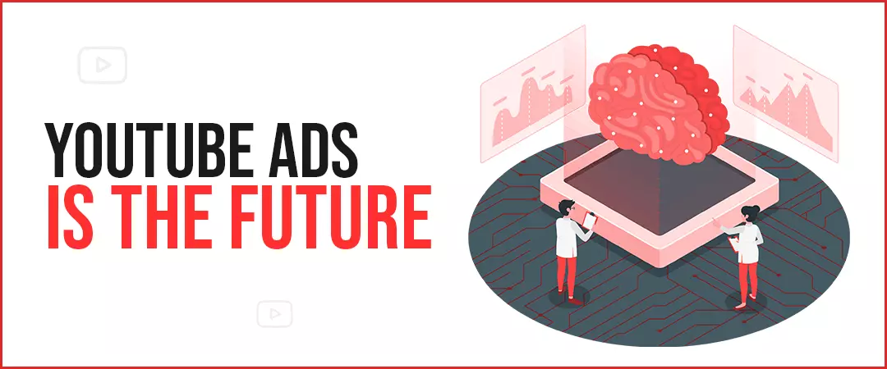
According to Think with Google blog, the watch time generated by videos titled “which product to buy”, increased by two times between 2017 and 2018, and has been escalating ever since. Thus, YouTube is progressively becoming a hub for influencing buyer decisions. Moreover, YouTube is one of the most cost-effective platforms for running ads. Thus, it becomes a necessary conclusion that YouTube Advertisement is the future!
What are the types of ad formats that YouTube provides?
Google allows marketers to run 5 different types of ads (both video and non-video format) on YouTube, these include:
1. TrueView in-stream ads
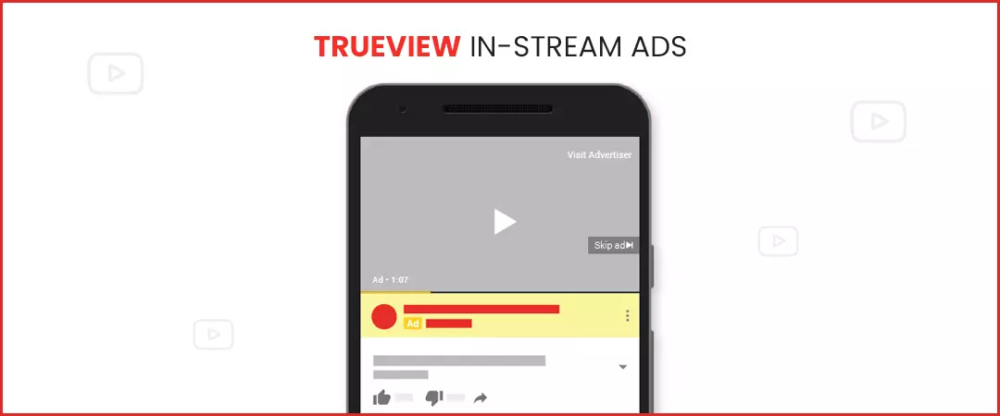
What is true view in-stream ads
TrueView In-stream ads are skippable by nature, giving the viewer an option to skip the ad after 5 seconds. They may appear before, during or after any YouTube video, user clicks on to view. YouTube allows the TrueView In-stream ads to be 12 seconds to 6 minutes long. In case of this ad type, in CPV bidding, the advertiser is charged only when a user views more than 30 seconds of the YouTube advertisement. However, in Target CPA or Target CPM bidding, advertisers are charged as per impressions.
Where true view in-stream ads are displayed
These ads may appear in Desktop, mobile devices, TV, and game consoles.
What goals to select for True view ad format
As per Google Ads Help, marketers can run a TrueView In-stream YouTube ad for the following goals: Sales, Leads, Website traffic, Brand awareness and reach, Product and brand consideration.
2. Non-skippable in-stream ads
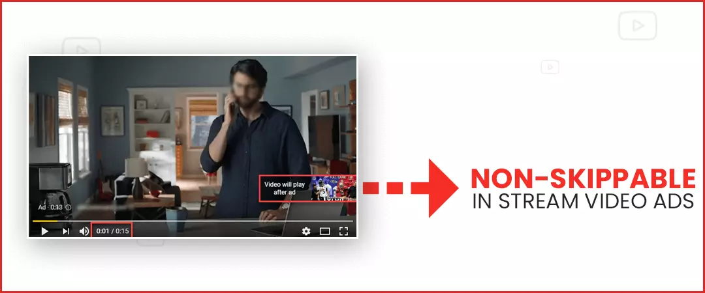
What is non-skippable in-stream ads
Since viewers are unable to skip this ad format, they are not considered to be TrueView. Non-skippable in-stream ads appear before, during or after the main video. This ad type can be 15 seconds long at maximum. In case of these ads, advertisers are charged based on impressions.
Where are non-skippable in-stream ads displayed
These ads may appear in Desktop and mobile devices.
What goals to select for non-skippable in-stream ad format
arketers can run a Non-skippable In-stream YouTube ad for the following goals: Brand awareness and reach
3. TrueView video discovery ads
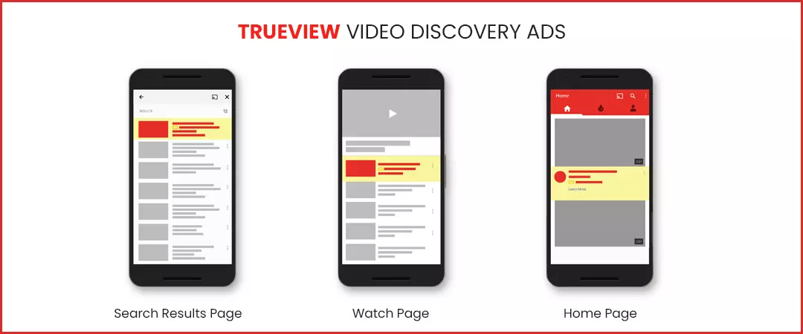
What is true view video discovery ads
Previously known as In-display ads, TrueView video discovery ad is a non-video ad format. They consist of a thumbnail image, a CTA, link to website, and a few lines of description. These are known as discovery ads because they are found in places of discovery on YouTube platform such as SERPs. In case of TrueView Video discovery ads, the advertiser is charged only when a viewer clicks on the ad to watch the video.
Where are true view video discovery ads displayed
A TrueView Video Discovery YouTube ad may appear in the SERPs, homepage, or in the related videos window.
What goals to select for true view video discovery ad format-
Marketers can run a TrueView Video Discovery YouTube ad for the following goals: Product and brand consideration
4. Bumper ads
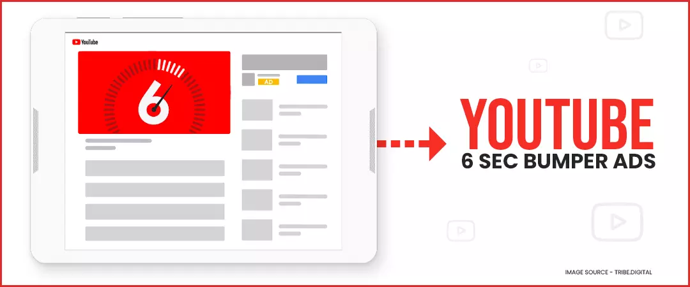
What are bumper ads
Bumper Ads are yet another form of non-skippable YouTube ad. It can be 6 seconds long at maximum. These appear before, during, or after another video the main video starts playing. Bumper Ads prove to be really helpful when marketers wish to share a short message with viewers. For bumper ads, advertisers are charged on the basis of impressions.
Where are bumper ads displayed
Bumper ads appear in the video player, on Desktop and mobile devices.
What goals to select for bumper ads format
Marketers can run a Bumper YouTube ad for the following goals: Brand awareness and reach.
5. YouTube Masthead ads
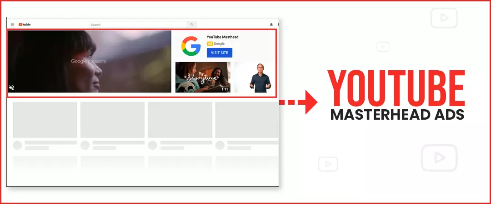
What are masthead ads
Masthead ads are a special YouTube ad format, that can only be used by reserving it through Google sales representative. Advertisers are charged for masthead ads on per day or per thousand impressions. Brands invest masthead ads when they wish to hold a huge awareness drive about a new product / service, in a short time duration.
Where are YouTube masthead displayed
Masthead YouTube ads appear in desktop, mobile and TV screen devices. The masthead has different characteristics for different platforms.
What goals to select for masthead ad format-
As mentioned above, masthead YouTube ads are a special kind of ad, which can be arranged only through Google sales representative, i.e., they are available only on reservation basis.
Important: Except the Masthead YouTube Ad which is run by communicating Google ads help centre, you can run any of these ads by clicking on ‘Create a campaign without a goal's guidance’.
Two other forms of non-video YouTube ads include
1. Overlay Ads
Overlay ads are a semi- transparent text ad, which appear in the lower 20% portion of the video player, while the video is playing. They can also be crossed. They appear only in the desktop.
2. Sponsored Cards
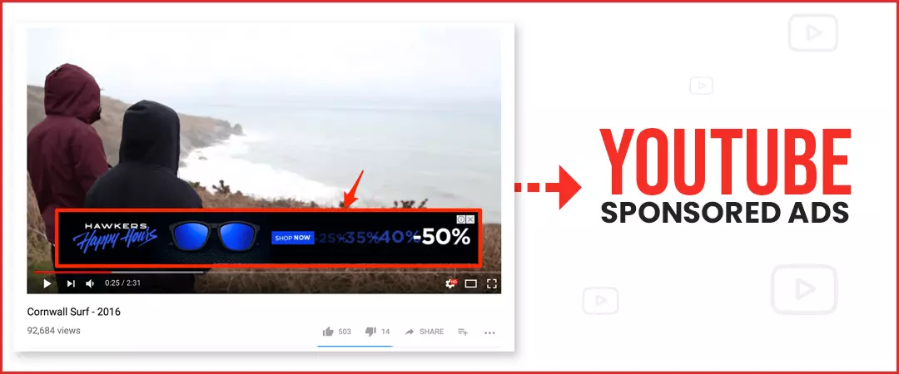
Sponsored cards appear in the video player after the video ends and displays ads for related products. They are automatically teased, however, they will it to the viewer to further explore them, as they are clickable. They appear in both desktop and mobile devices.
To know more about YouTube Ads, click here.
How to run a successful Ad Campaign on YouTube?
Follow each of these steps closely to run a successful YouTube Advertisement Campaign:
Step 1: First of all, you need a YouTube Channel with at least of handful videos (so that, when viewers come exploring, they find some value in your content) and a Google Ads account (this is where we go to run ads on YouTube).
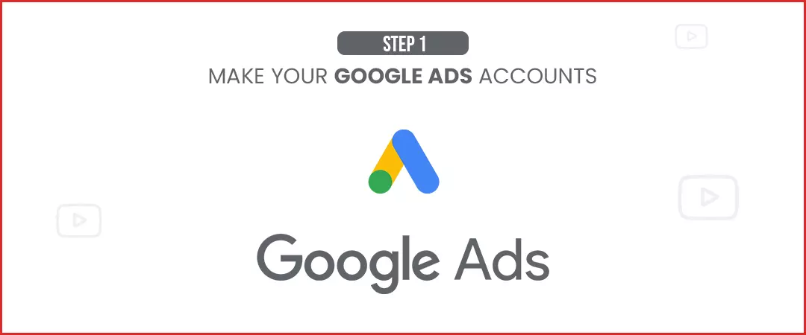
Step 2: Sign in to your Google Ads account, and click on ‘NEW CAMPAIGN’. Once you click on this, you have to select a goal from the following:
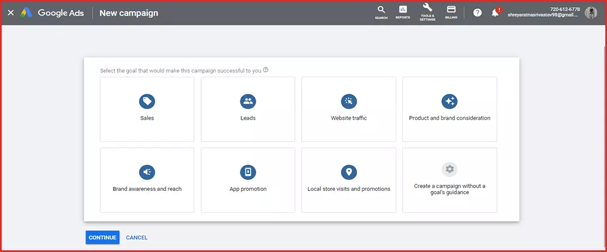
- Sales- To drive sales online
- Leads- Get leads through CTAs
- Website Traffic- To attract target audience to website
- Product and Brand Consideration- To encourage target audience to explore your products & services
- Brand Awareness and Reach- Build brand awareness by targeting a broad audience
- App Promotion- To attract more users for your app
- Local Store Visits and Promotions- To drive visitors to your physical stores
OR… ‘Create a campaign without a goal's guidance’ if you want to create campaign step- by- step without the goal’s recommendations.
Step 3: After you select your goal from the above-mentioned ones, you have to a campaign type from among the following:
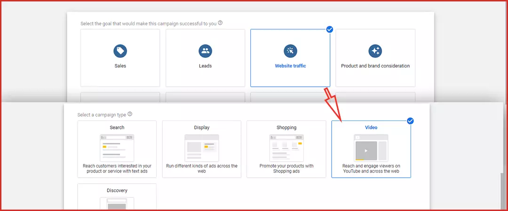
- Search
- Shopping
- Display
- Video
- Discovery
- Smart
Although, in case of YouTube ads, you have to choose for video. However, ‘Display’ and ‘Discovery’ subtypes are also presented on YouTube, but they are not video ads.
Step 4: After you select campaign type as ‘Video’, you have to choose a campaign subtype, hit Next and then name your campaign.
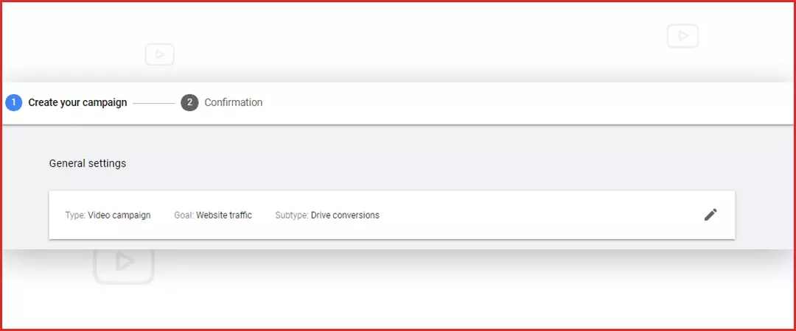
Step 5: Next, you have to choose your bid strategy. Based on the campaign goal you selected, you will see different bid strategy options, for example- CPM, CPV, that help you meet that goal.
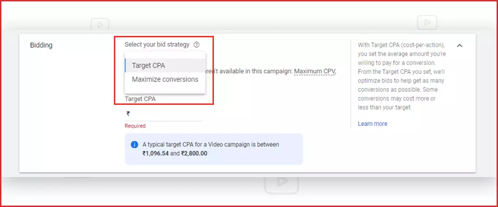
Step 6: Now you to select your ‘budget type’, the ‘amount’ you are willing to spend, as well the ‘start and end date of your campaign’, as well as ‘locations’ where you would like to run your ad, and the ‘languages’ you would like to target.
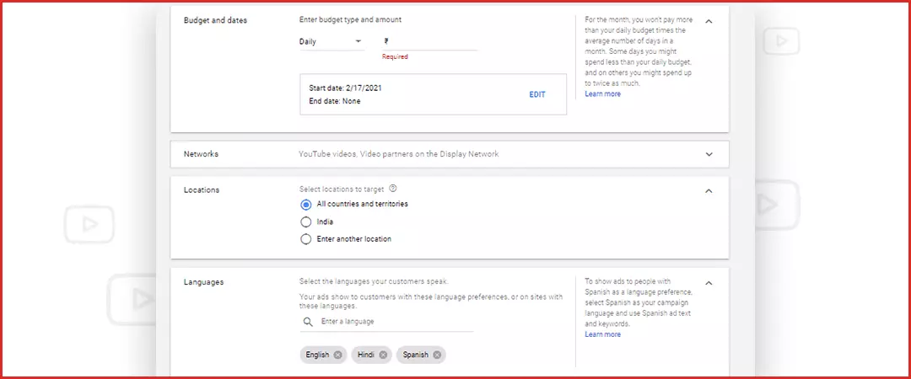
Step 7: Next up, define where you would like your ads to show up on YouTube, or to put it plainly, alongside what type of content (or how sensitive), you are willing to run your ads.
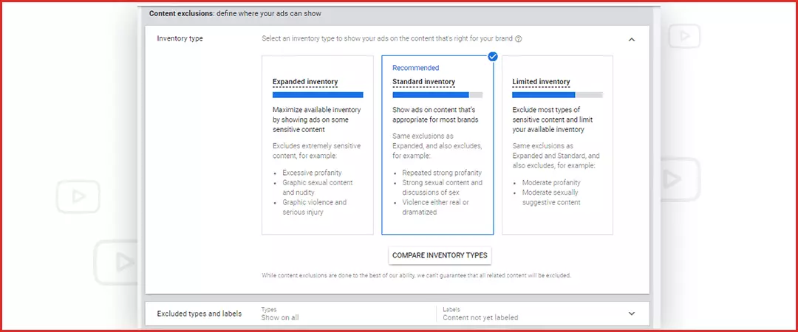
Step 8: Now it’s time to focus on demographic targeting, as you select gender, age, parental status, and household income of your target audience. You can also select through audience targeting by selecting specific interests, intents, and demographics, as estimated by Google.
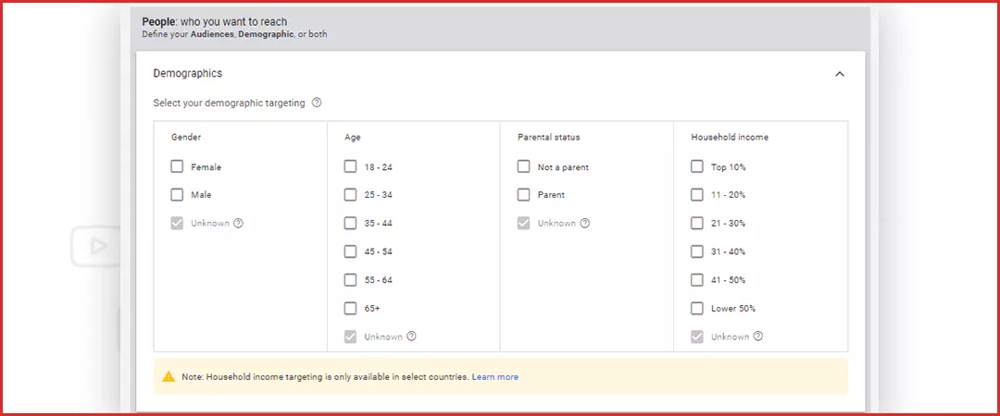
Step 9: Add Keywords, Topics and Placements to further narrow and specify your reach on YouTube’s platform.
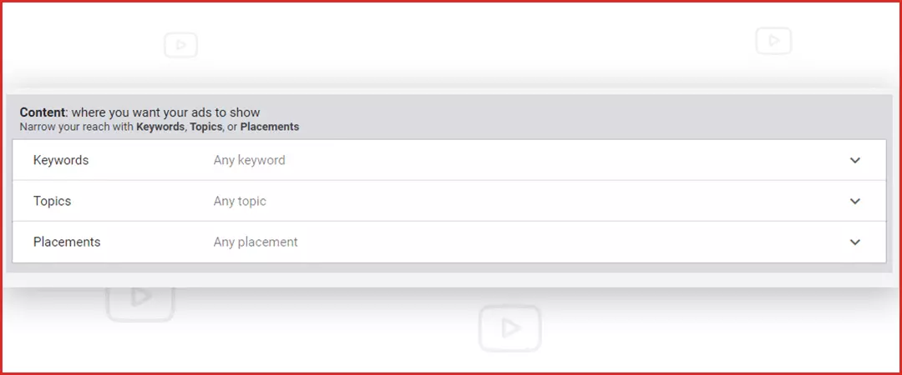
Step 10: Add the link of your YouTube video, add a CTA and headline if you wish to. As soon as you are done adding these, Google Ads will show you the weekly estimates of your campaign. These weekly estimates include, Impressions, Average CPM, Budget Spend and Unique Reach.
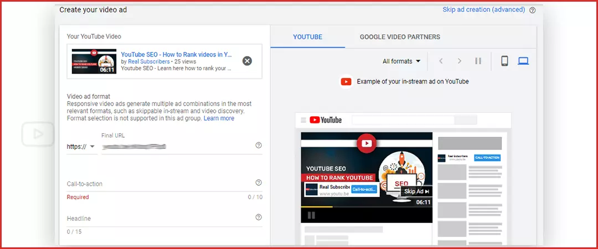
Step 11: Once you review your campaign settings and add your billing information, you are all set to run your first YouTube ad campaign! After your campaign is up and running, you also get the option of pausing or completely removing it.
.webp)
That’s it, folks! That’s everything you needed to know to run your first YouTube Advertisement Campaign! I hope you found this as a helpful guide on how to run YouTube Ads! Come back for more such blogs.
Feel free to share!